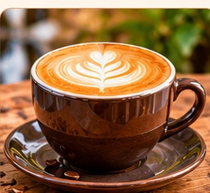
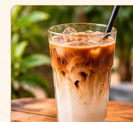

Caffe Latte
Smooth espresso with creamy milk.
KES 320A neighbourhood café in Westlands
Welcome to Savanna Brew Café, your cosy corner in Westlands where every cup tells a story.
Our welcome
We roast and brew coffee from the highlands of Nyeri and Kiambu, and pair it with fresh pastries baked every morning. Come in, relax, and taste the difference.
A small café with a big heart, built around Kenyan beans, local makers and a table for everyone.
From the counter
Thoughtfully made and ready when you are.

Smooth espresso with creamy milk.
KES 320
A warming, spiced milk tea.
KES 250
Espresso over ice with cold milk.
KES 350Your table is waiting
Planning a birthday, business catch-up or a slow Saturday? Tell us when you are coming.